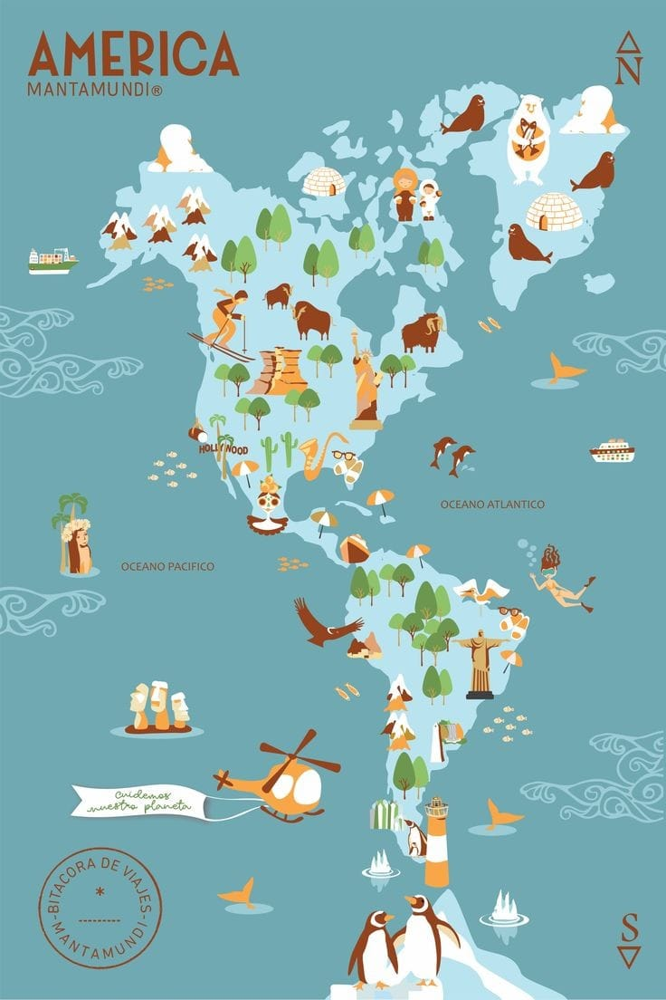

O clima semiárido está presente em algumas regiões de todo o continente americano, entre eles estão: o nordeste brasileiro (especialmente o sertão, que abrange estados como Ceará e Rio Grande do Norte), a região do Chaco (na Argentina), Bolívia e Paraguai, Vale Central do Chile, algumas áreas do México, como o Deserto de Sonora e o Deserto de Chihuahua, o sudoeste dos Estados Unidos, estados como o Texas, Novo México e Arizona.
No clima semiárido da América do Norte, a fauna é adaptada às condições áridas e secas. Entre os mamíferos, destacam-se os coiotes e veados, que são bastante comuns nessa região. As aves típicas desse clima incluem falcões e corvos, conhecidos por sua resistência e adaptabilidade. No grupo dos répteis e anfíbios, as cascavéis e tartarugas se destacam pela capacidade de sobreviver em ambientes secos e quentes.
Na América Central e no Caribe, o clima semiárido também abriga uma fauna diversificada. Entre os mamíferos, os tatus são frequentemente encontrados, adaptados ao solo seco e à vegetação esparsa. As aves que prosperam nesse clima incluem os beija-flores, conhecidos por sua habilidade de encontrar néctar em condições adversas. Entre os répteis e anfíbios, as iguanas e cobras são comuns, adaptadas às altas temperaturas e à escassez de água.
Na América do Sul, o clima semiárido apresenta uma rica diversidade de fauna adaptada às condições áridas. Os tamanduás-bandeira são um exemplo de mamíferos que habitam essas regiões, alimentando-se de insetos que encontram no solo seco. Entre as aves, os papagaios são comuns, exibindo uma impressionante capacidade de sobrevivência em ambientes semiáridos. No grupo dos répteis e anfíbios, cobras-coral e lagartos são típicos, demonstrando adaptações notáveis para viver em climas quentes e secos.
Em decorrência das secas prolongadas e das altas temperaturas, somadas aos solos pedregosos e de baixa fertilidade, a vegetação do clima semiárido é bastante esparsa e de baixa e média estaturas (até 12 metros aproximadamente), com a predominância de espécies de gramíneas, arbustivas e árvores com cascas grossas, tronco retorcido e perenifólias, isto é, que perdem suas folhas durante a estação seca.
Outros mecanismos de defesa e adaptação à baixa umidade (que recebem o nome de xeromorfismo) que a flora dos climas semiáridos possui são:
• presença de espinhos;
• capacidade de acumular água em seu interior, como os cactos;
• uma camada de cera sobre as folhas, que evita o seu ressecamento;
• raízes superficiais, que se espalham nas proximidades da planta para que possa haver a absorção de água das chuvas, e, em alguns locais, espécies de raízes profundas, que absorvem a água e os nutrientes que possam haver no solo, a exemplo do juazeiro, presente no semiárido brasileiro.
São comuns formações como os estepes e a Savana, que, no Brasil, recebe o nome de Caatinga nas regiões de ocorrência desse tipo climático em específico.

© Imagem do continente americano